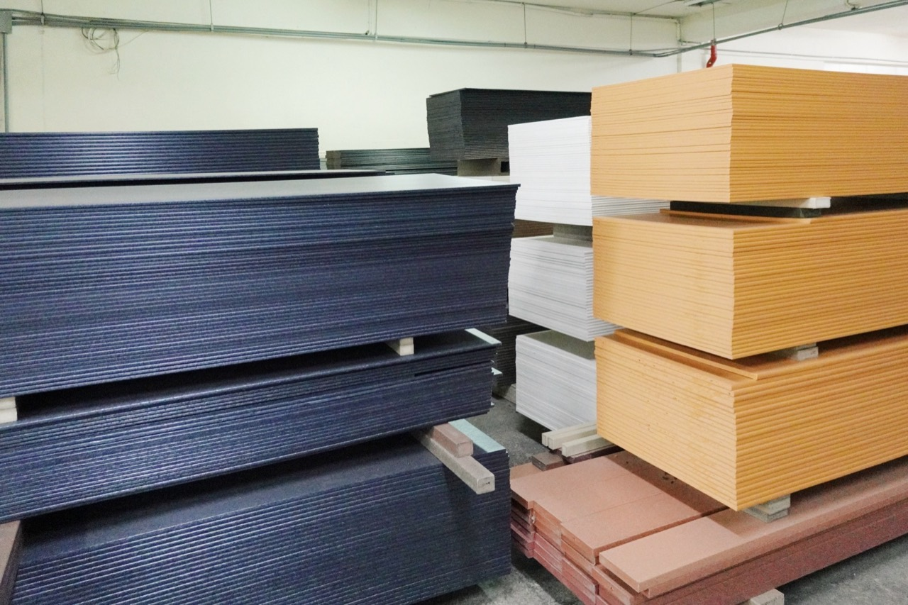
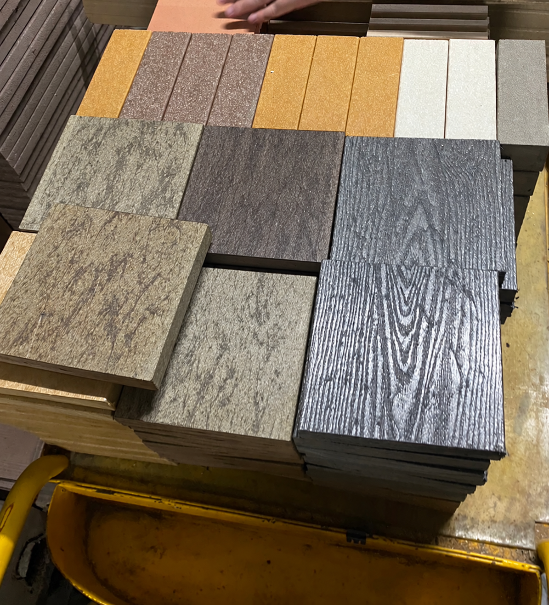
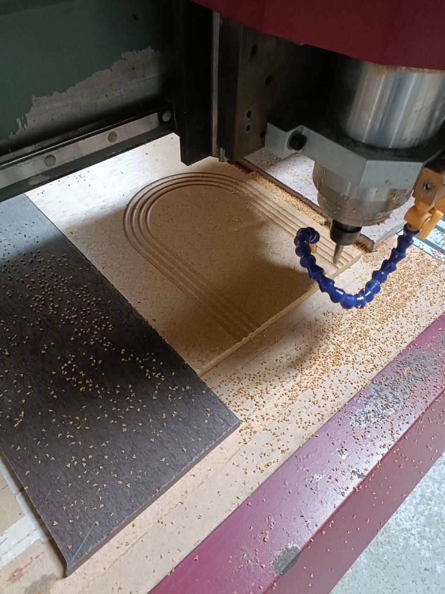

SURFACE & FABRICATION
看見表面，也看見加工的可能。

色系與紋理
從平整板面到木紋押花，依用途選擇外觀。

裁切與 CNC 加工
依圖面討論外形、孔位與溝槽，銜接後續組裝。
實際色系、表面與加工條件，依選用產品確認。
MATERIAL IN USE
讓板件，走進空間。
從展示製作，到牆面與平台。
SELECTION GUIDE
細節，留給你的選材需求。
尺寸與色系可先查閱；適用檢測資料，歡迎洽詢。
LET’S MAKE IT
你想用板材，做什麼？
傳來照片或圖面，告訴我們用途、尺寸與數量。
透過 LINE 詢問板材 ↗
開啟捷綠盟官方 LINE，由你傳送訊息與檔案。